O jogo PARANOIA foi desenvolvido na linguagem Java pelos alunos Marcelo Hideaki Iwata Kito e Rafael Tatsuki Takagi como requisito parcial para a matéria Técnicas de Programação da Universidade Estadual Paulista "Júlio de Mesquita Filho".
O jogo propõe o combate entre dois jogadores onde um não tem visão do outro, se guiando através de “dicas” da posição do outro.
Ao ficar muito tempo sem se moverem, os jogadores (independentemente da classe, que serão devidamente explicadas mais a frente) ficam “paranoicos”, revelando sua posição ao adversário. Além disso, algumas de suas ações também desencadeiam pistas de localização ao inimigo.
Aos jogadores serão atribuidos duas classes diferentes (dependendo da ordem em que se conectarem ao servidor) que realizarão dois papeis distintos.
Cada jogador terá visão de si mesmo e será indicado por um círculo branco, podendo movimentar-se através das setas direcionais no teclado.
No caso do caçador, este poderá atirar com o click do mouse
Como os jogadores não terão visão um do outro, serão dadas dicas do posicionamento do adversário:
• A cada certa quantidade de passos, cada um dos jogadores emite um "som" que pode ser visto pelo outro jogador assim como uma "pegada" que indica a direção que este anda;

• Ao ficar parado por algum tempo, a presa começa a ficar paranoica, revelando sua posição ao caçador;
• Quando coletar algum guizo, a presa emitirá um "som" que revela a posição em que o guizo estava;
• Já o caçador, se ficar imóvel por algum tempo, revelará sua posição à presa e seus tiros sairão deveras descalibrados.
O objetivo do caçador é acabar com a presa o mais rápido possível atirando nela
Ele possui uma arma que será disparada na direção do cursor no momento em que o usuário clicar. Porém, depois de cada tiro, o caçador tem de esperar algum tempo para recarregar a arma, ficando imóvel durante o processo.
Mas cuidado, se ficar muito tempo parado ele fica paranoico e o tiro poderá sair um pouquinho torto...
O objetivo da presa é coletar guizos (vistos apenas por ele) que aparecerão aleatóriamente pelo mapa evitando ser atingido pelo caçador.